AI as a design partner
Turning rough ideas into working prototypes fast, so teams can test real flows instead of debating static screens.
About me
I'm somewhere in the middle, still exploring, still learning.
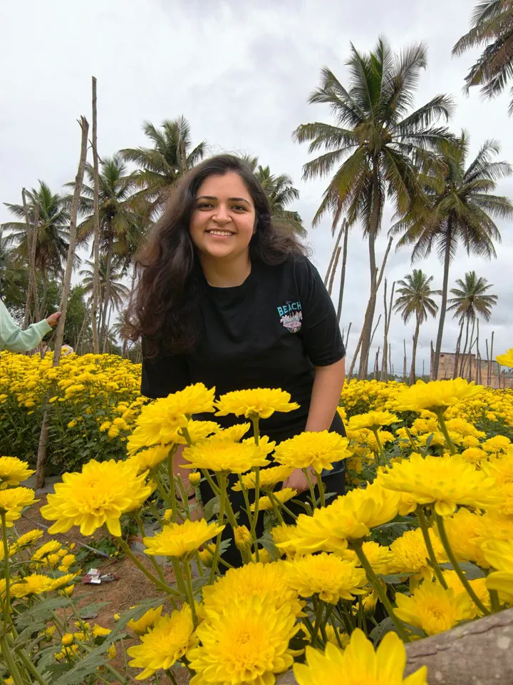
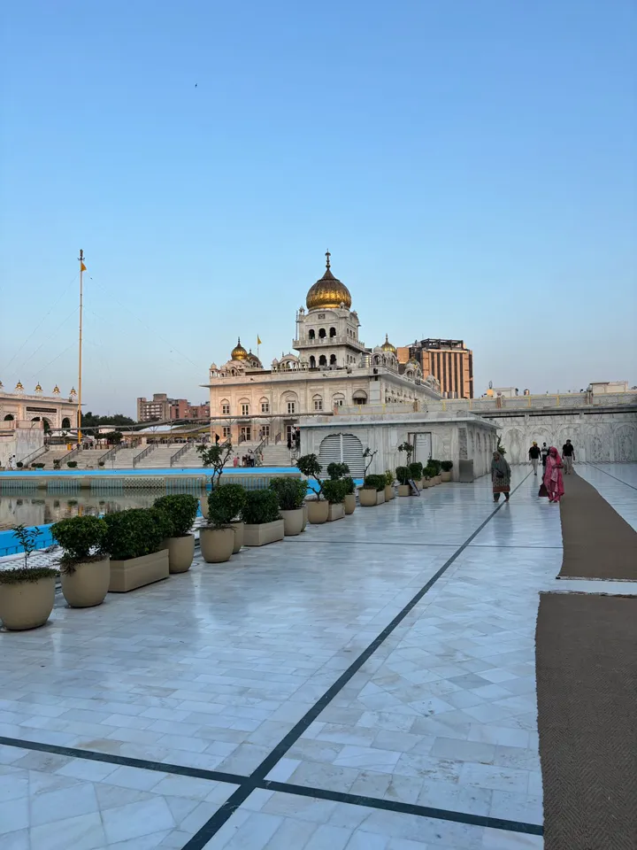
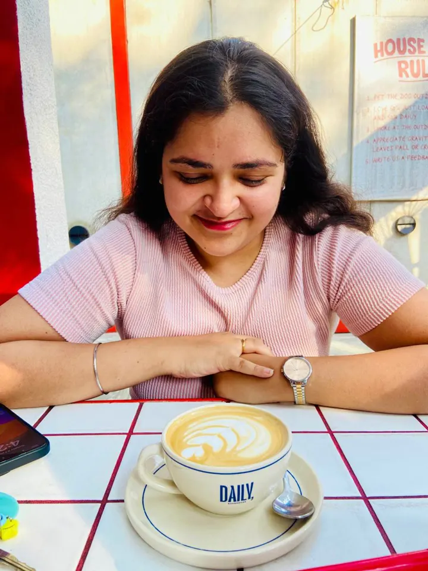
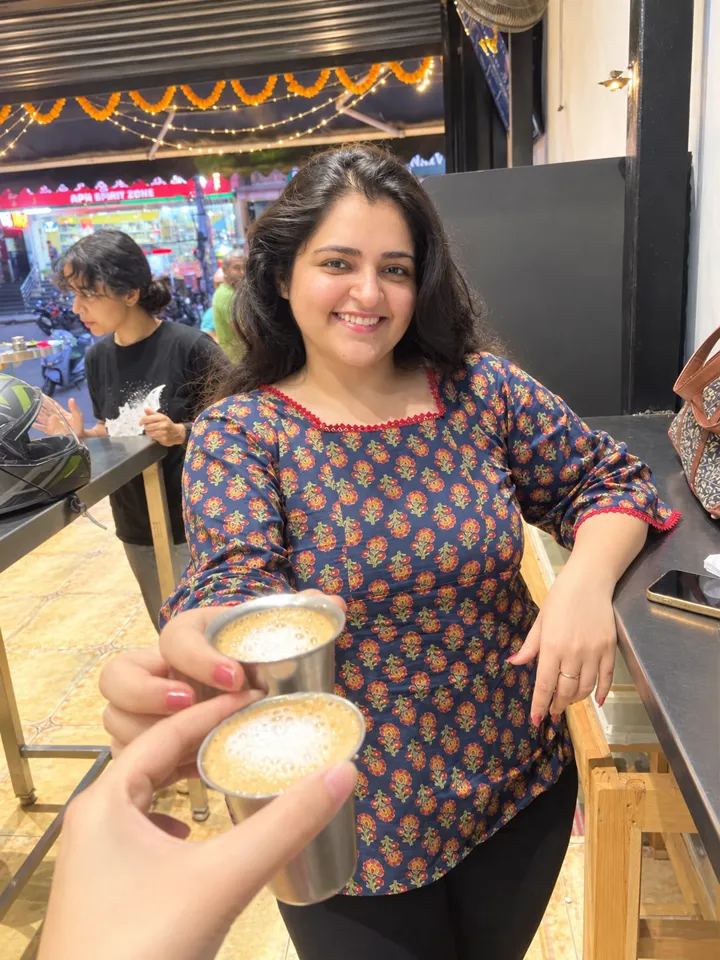
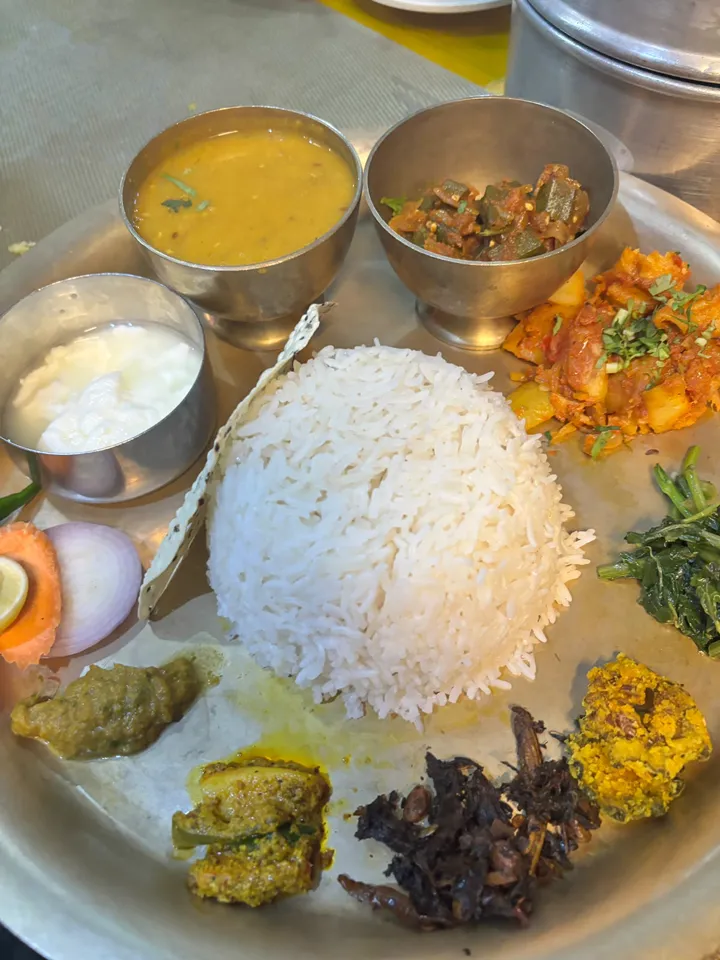
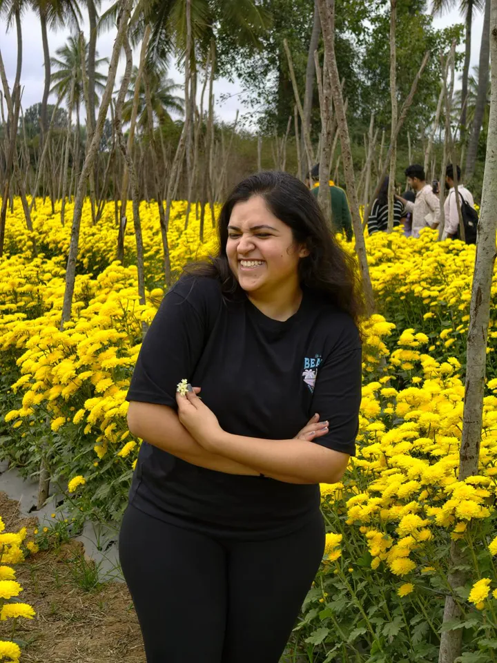
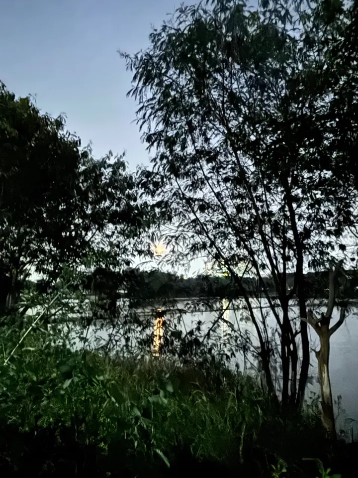
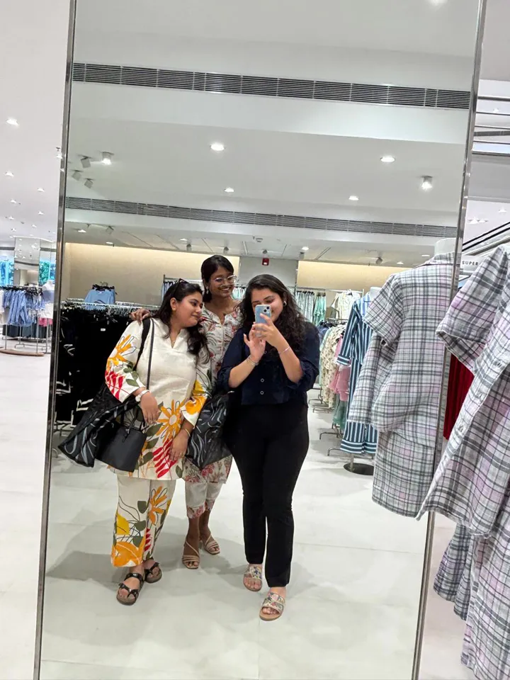
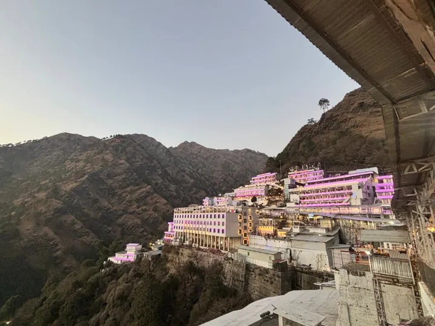
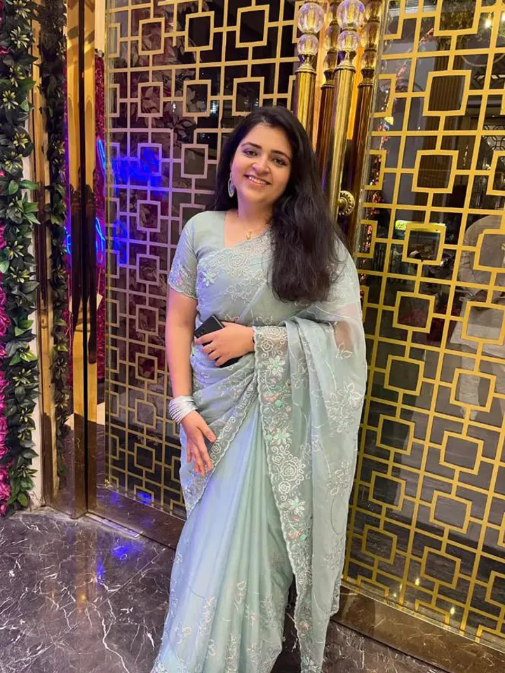
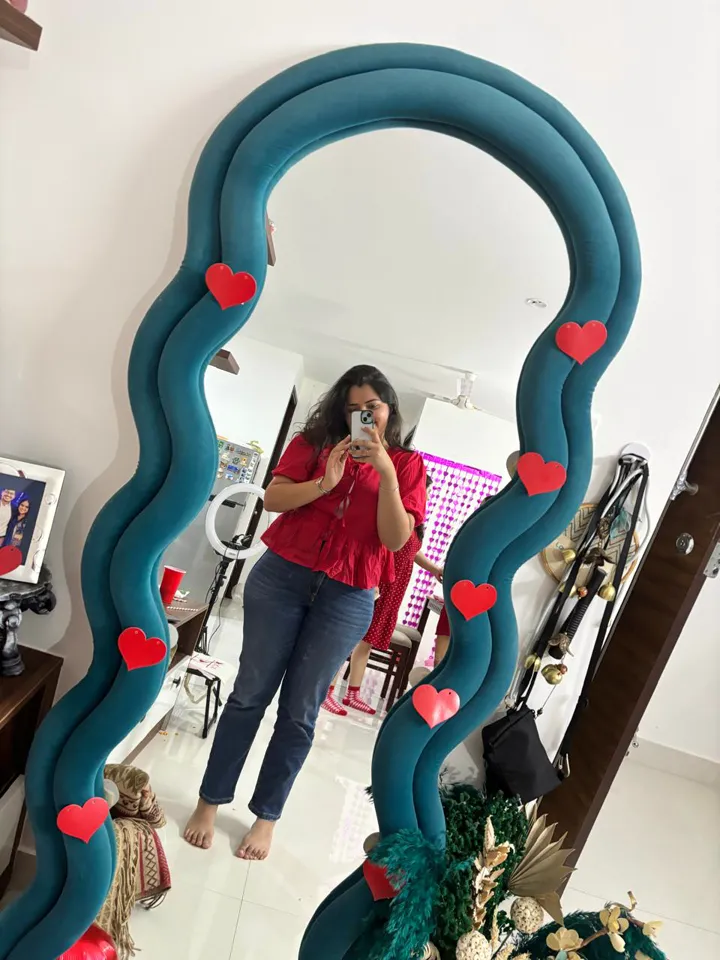
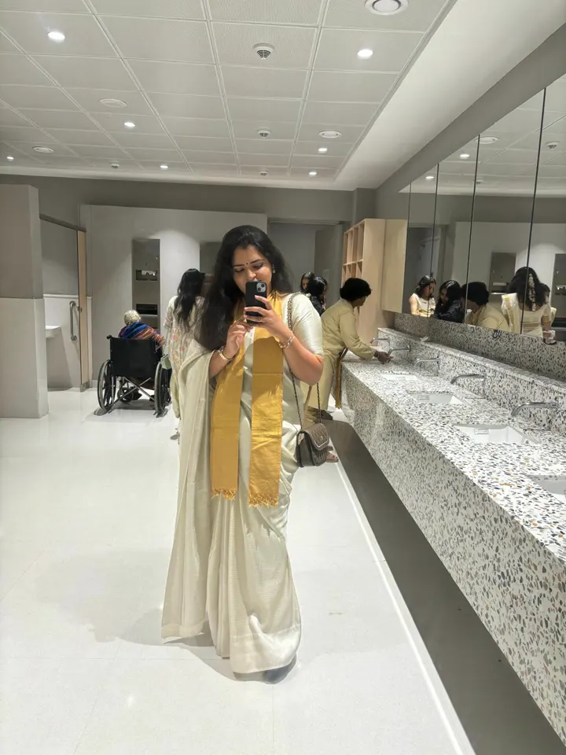
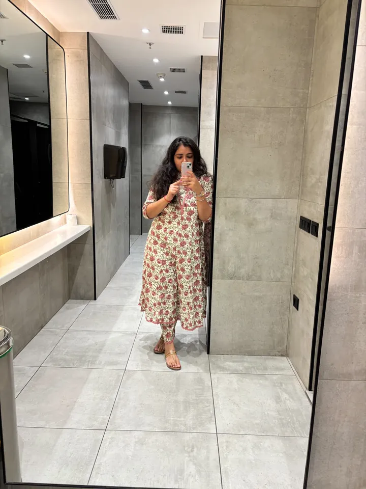
Turning rough ideas into working prototypes fast, so teams can test real flows instead of debating static screens.
Tokens, light and dark modes, and components that designers and engineers can build from without second-guessing.
The micro-interactions and states nobody notices until they're missing. They're what make a product feel alive.
I'm always up for meeting people who care about design. Tell me what you're building.
kunikabajaj29@gmail.com